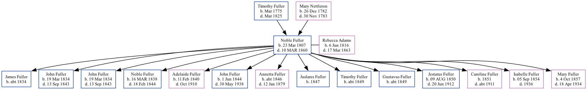

Noble Timothy Fuller 1807 - 1860
[ Home ] | [ Surnames Index ] | [ Family History ]The 8th of 11 children of Timothy Fuller and Mary Nettleton, was born in Louisa County, IA on Mar 23, 18071 and married Rebecca Adams (with whom he had 14 children: James, John Marcus, John Marcus, Noble Adams, Adelaide, John Virgil Adams, Annetta, Juslares, Timothy, Gustavus, Jestarus Noble Timothy, Caroline Lesuer, Isabelle M and Mary Jane Josephine) in Erie County, PA in 1834.
He died on Mar 10, 1860 in Columbus Junction, Louisa Co., Iowa1 (age at Death: 52) and was buried in Columbus Junction, Louisa County, Iowa, USA after Mar 10, 18601.
Parents
- Timothy S was born in Mar 1775
- Mary Anne was born on Dec 26, 1782
Children
- James was born c. 1834
- John Marcus was born on Mar 19, 1834
- John Marcus was born on Mar 19, 1834
- Noble Adams was born on Mar 16, 1838
- Adelaide was born on Feb 11, 1840
- John Virgil Adams was born on Jun 1, 1844
- Annetta was born c. 1846
- Juslares was born in 1847
- Timothy was born c. 1849
- Gustavus was born c. 1849
- Jestarus Noble Timothy was born on Aug 9, 1850
- Caroline Lesuer was born in 1851
- Isabelle M was born on Sep 5, 1854
- Mary Jane Josephine was born on Oct 4, 1857
Citations
- Web: Iowa, Find A Grave Index, 1838-2011 Ancestry.com Operations, Inc.
Family Tree
Data (GEDCOM) maintained by Jay Weston Hannah, Omaha, Nebraska, USA.
Website generated by ged2site. Last updated on Jun 18, 2024.